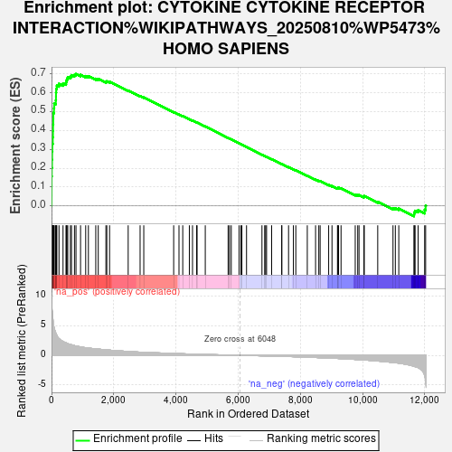
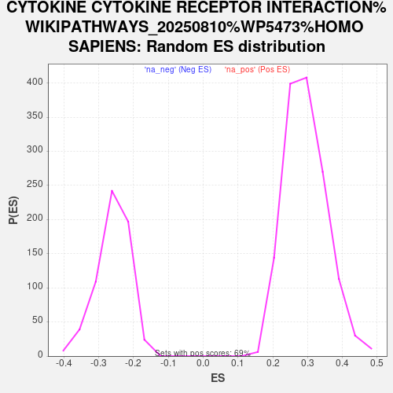

| Dataset | NHBE_SARSCoV2_ranks |
| Phenotype | NoPhenotypeAvailable |
| Upregulated in class | na_pos |
| GeneSet | CYTOKINE CYTOKINE RECEPTOR INTERACTION%WIKIPATHWAYS_20250810%WP5473%HOMO SAPIENS |
| Enrichment Score (ES) | 0.69990623 |
| Normalized Enrichment Score (NES) | 2.3783598 |
| Nominal p-value | 0.0 |
| FDR q-value | 0.0 |
| FWER p-Value | 0.0 |

| SYMBOL | RANK IN GENE LIST | RANK METRIC SCORE | RUNNING ES | CORE ENRICHMENT | |
|---|---|---|---|---|---|
| 1 | CCL20 | 1 | 9.951 | 0.0552 | Yes |
| 2 | IL36G | 2 | 9.425 | 0.1076 | Yes |
| 3 | INHBA | 3 | 8.809 | 0.1565 | Yes |
| 4 | CXCL1 | 8 | 8.326 | 0.2024 | Yes |
| 5 | CXCL5 | 16 | 7.874 | 0.2456 | Yes |
| 6 | LIF | 20 | 7.689 | 0.2880 | Yes |
| 7 | IL6 | 26 | 7.388 | 0.3286 | Yes |
| 8 | CSF3 | 40 | 6.651 | 0.3645 | Yes |
| 9 | CSF2 | 47 | 6.102 | 0.3979 | Yes |
| 10 | CXCL2 | 49 | 6.003 | 0.4312 | Yes |
| 11 | CXCL3 | 55 | 5.749 | 0.4627 | Yes |
| 12 | IL1A | 57 | 5.543 | 0.4934 | Yes |
| 13 | TNF | 80 | 4.793 | 0.5182 | Yes |
| 14 | TNFSF14 | 85 | 4.688 | 0.5439 | Yes |
| 15 | CXCL16 | 138 | 3.785 | 0.5606 | Yes |
| 16 | CXCL6 | 143 | 3.694 | 0.5807 | Yes |
| 17 | TNFRSF10A | 144 | 3.687 | 0.6012 | Yes |
| 18 | LTB | 151 | 3.618 | 0.6208 | Yes |
| 19 | IL7R | 170 | 3.406 | 0.6382 | Yes |
| 20 | IFNGR1 | 240 | 2.824 | 0.6481 | Yes |
| 21 | IL1RN | 370 | 2.353 | 0.6504 | Yes |
| 22 | IFNGR2 | 467 | 2.109 | 0.6541 | Yes |
| 23 | IL33 | 476 | 2.098 | 0.6651 | Yes |
| 24 | RELT | 497 | 2.038 | 0.6747 | Yes |
| 25 | TNFRSF10B | 522 | 1.976 | 0.6837 | Yes |
| 26 | CSF1 | 607 | 1.832 | 0.6868 | Yes |
| 27 | IL23A | 641 | 1.784 | 0.6940 | Yes |
| 28 | CCL28 | 737 | 1.642 | 0.6952 | Yes |
| 29 | TGFBR2 | 786 | 1.578 | 0.6999 | Yes |
| 30 | IL36RN | 933 | 1.420 | 0.6956 | No |
| 31 | CLCF1 | 1098 | 1.284 | 0.6890 | No |
| 32 | IFNAR2 | 1185 | 1.217 | 0.6885 | No |
| 33 | TNFRSF12A | 1422 | 1.084 | 0.6748 | No |
| 34 | IL15RA | 1502 | 1.046 | 0.6740 | No |
| 35 | IL17RC | 1748 | 0.918 | 0.6586 | No |
| 36 | LTBR | 1777 | 0.904 | 0.6613 | No |
| 37 | TGFB1 | 1866 | 0.869 | 0.6588 | No |
| 38 | EPOR | 2464 | 0.647 | 0.6124 | No |
| 39 | CXCL17 | 2847 | 0.533 | 0.5834 | No |
| 40 | TNFRSF19 | 2965 | 0.504 | 0.5764 | No |
| 41 | GDF15 | 3926 | 0.307 | 0.4977 | No |
| 42 | IFNAR1 | 4097 | 0.279 | 0.4851 | No |
| 43 | ACVR1B | 4218 | 0.256 | 0.4764 | No |
| 44 | ANP32B | 4430 | 0.223 | 0.4600 | No |
| 45 | IL1R1 | 4532 | 0.209 | 0.4527 | No |
| 46 | TNFRSF25 | 4664 | 0.186 | 0.4428 | No |
| 47 | PPBP | 4679 | 0.184 | 0.4427 | No |
| 48 | IL18R1 | 4942 | 0.144 | 0.4215 | No |
| 49 | IFNLR1 | 5676 | 0.043 | 0.3604 | No |
| 50 | TNFRSF1A | 5720 | 0.038 | 0.3570 | No |
| 51 | IL22RA1 | 5777 | 0.031 | 0.3525 | No |
| 52 | IL1RL1 | 6027 | 0.002 | 0.3317 | No |
| 53 | GDF11 | 6087 | -0.004 | 0.3268 | No |
| 54 | LEP | 6119 | -0.008 | 0.3242 | No |
| 55 | IL27RA | 6268 | -0.027 | 0.3120 | No |
| 56 | CCL26 | 6764 | -0.089 | 0.2711 | No |
| 57 | TGFBR1 | 6851 | -0.100 | 0.2644 | No |
| 58 | IL6ST | 6882 | -0.104 | 0.2625 | No |
| 59 | CCL5 | 6912 | -0.108 | 0.2607 | No |
| 60 | BMPR1A | 7075 | -0.128 | 0.2478 | No |
| 61 | IL1RL2 | 7399 | -0.174 | 0.2217 | No |
| 62 | EDAR | 7402 | -0.174 | 0.2225 | No |
| 63 | BMPR2 | 7619 | -0.209 | 0.2056 | No |
| 64 | IL20RA | 7774 | -0.234 | 0.1940 | No |
| 65 | IL17RA | 7852 | -0.248 | 0.1890 | No |
| 66 | IL10RB | 8221 | -0.320 | 0.1600 | No |
| 67 | LEPR | 8487 | -0.373 | 0.1399 | No |
| 68 | TSLP | 8591 | -0.395 | 0.1334 | No |
| 69 | FAS | 8634 | -0.406 | 0.1322 | No |
| 70 | IL11 | 8908 | -0.465 | 0.1119 | No |
| 71 | CX3CL1 | 9015 | -0.489 | 0.1057 | No |
| 72 | IL20RB | 9191 | -0.530 | 0.0940 | No |
| 73 | TNFRSF10C | 9206 | -0.534 | 0.0958 | No |
| 74 | IL11RA | 9226 | -0.541 | 0.0973 | No |
| 75 | TNFSF10 | 9306 | -0.562 | 0.0938 | No |
| 76 | TNFRSF11A | 9762 | -0.699 | 0.0596 | No |
| 77 | IL13RA1 | 9842 | -0.722 | 0.0570 | No |
| 78 | IL18 | 9884 | -0.736 | 0.0576 | No |
| 79 | TNFRSF21 | 10041 | -0.787 | 0.0489 | No |
| 80 | TNFRSF14 | 10052 | -0.791 | 0.0525 | No |
| 81 | ACVR2A | 10485 | -0.967 | 0.0217 | No |
| 82 | NGFR | 10976 | -1.216 | -0.0125 | No |
| 83 | ACVR2B | 11051 | -1.257 | -0.0117 | No |
| 84 | IL15 | 11162 | -1.330 | -0.0136 | No |
| 85 | ACVR1 | 11651 | -1.858 | -0.0441 | No |
| 86 | BMP4 | 11660 | -1.880 | -0.0343 | No |
| 87 | BMP7 | 11686 | -1.921 | -0.0257 | No |
| 88 | GHR | 11784 | -2.089 | -0.0222 | No |
| 89 | IL6R | 11993 | -3.499 | -0.0202 | No |
| 90 | CXCL14 | 12025 | -4.302 | 0.0011 | No |
